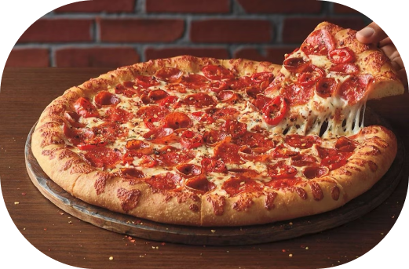

Меню

Про нас
В Італії розуміються на справжній піці і випікають її тільки в автентичній дров'яній печі. І ми повністю слідуємо рецептурі традиційних італійських піцерій. Усередині така піч воістину «пашить жаром», щоб забезпечити рівномірне випікання: температура її надрах сягає близько 400 градусів.